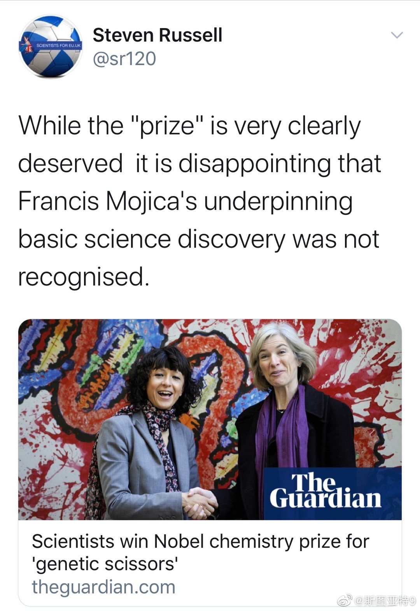

救助法案谈判两方的出价竟然已经很接近了：2.2万亿 vs 1.8万亿。看上去协议很快就会达成啊。怪不到股市已经上天了。唯一的悬念事还能飞多高。会不会奔4800去了？

斯图亚特9
2020-10-09
斯图亚特9
2020-10-09
在推特上搜索了一下，除了一些人遗憾张锋没有一同获奖外，还有至少两个类似的遗憾。看上去CRISPR是个一群人集体渐进创新的结果。也许诺贝尔奖怎么选都很难公平。不过看起来很多人都预测未来几年内医学和生理学奖会再发给一次CRISPR相关研究了吧。那时候至少张锋应该会在列了。不知道Mojica和Siknys之类的就永久悲剧了。当然至少没有出现Rosalind Franklin那样女科学家被排除在外的悲剧，还算时代有些许的进步吧。
- 
斯图亚特9
2020-10-09
今年这个诺贝尔和平奖确实听着重量配不上2020年。但想一想也挺同情评奖委员会的。在今天这样的一个世界，竟然必须要选出一个“和平”奖。空缺行不行？